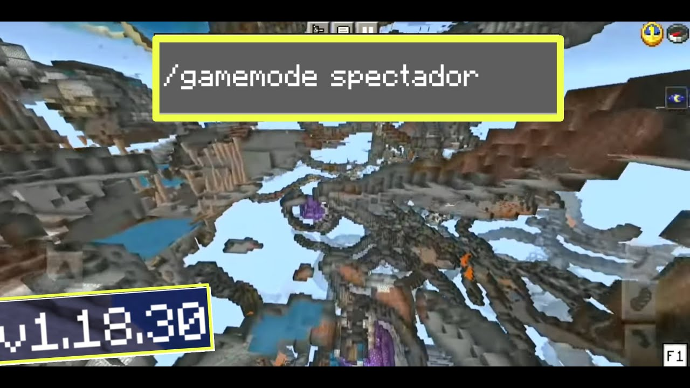

Modo Espectador de Minecraft
Definición del Modo
El modo espectador permite a los jugadores observar el mundo de Minecraft sin interactuar directamente con él, ofreciendo una experiencia única de exploración y observación.
Características Principales
- Movimiento Libre: Viajar a través de bloques y entidades sin restricciones
- Sin Interacción: No se pueden modificar bloques ni recoger objetos
- Visión de Jugadores: Posibilidad de ver a otros jugadores en tiempo real
- Sin Límites Físicos: Atravesar paredes y obstáculos
Usos del Modo Espectador
- Observar construcciones y estructuras de otros jugadores
- Documentar y analizar mapas y construcciones
- Aprender técnicas de construcción
- Supervisar partidas sin interferir

Explora y observa mundos de Minecraft desde una perspectiva única.